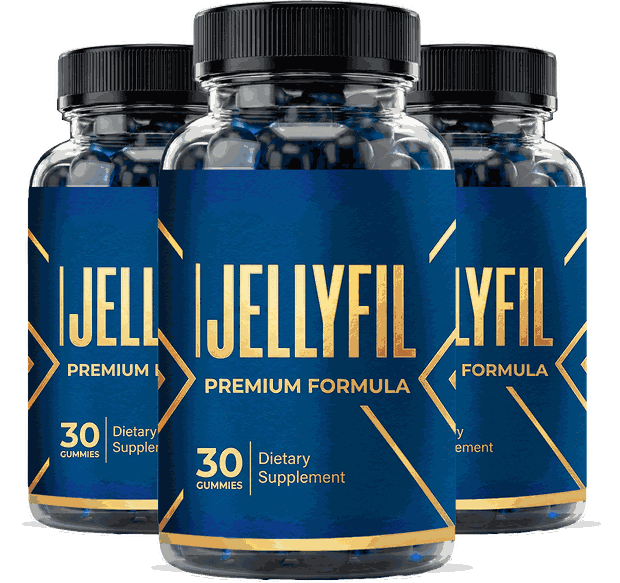
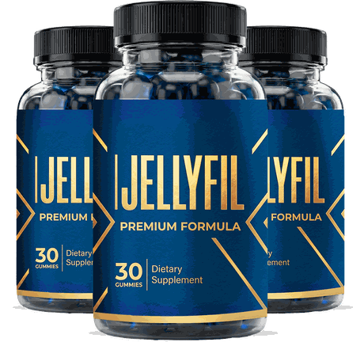
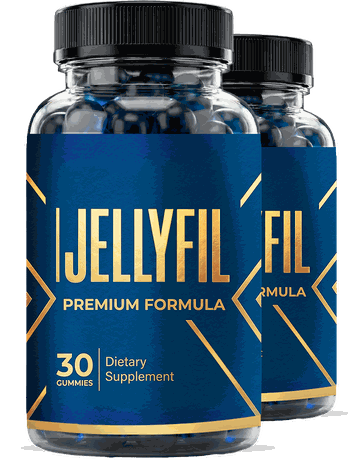
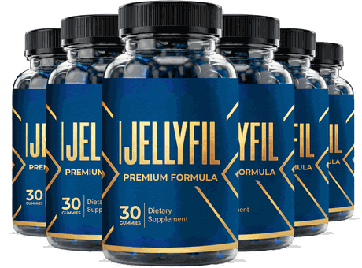

Chewable gummies · 30 per bottle · Men 18+ · One a day
JellyFil: A Once-Daily Men's Vitality Gummy That Supports Energy, Stamina And Everyday Drive
JellyFil is a daily gummy for adult men who want a simple habit to sit beside good sleep, regular movement and balanced meals. You take one gummy with a glass of water at the same time each day, with no capsules and no stack to remember. The seller describes it as a once-daily blend that supports steadier energy, stamina and drive without a heavy stimulant. We read that more carefully: it is a dietary supplement, not a treatment for erectile dysfunction or low testosterone, no result is promised, and the amounts of each ingredient are not published. This page sets out the seller's listed facts, the safety points that matter most for men on common medicines, the pack prices and the 60-day guarantee.*
- One gummy a day, no capsules to swallow
- A single blend of eight listed ingredients
- Free US shipping on 3 and 6 bottles
- A 60-day money-back guarantee
- 1Askyour doctor about your medicines
- 2Takeone gummy with water
- 3Movetrain or walk most days
- 4Sleepseven to nine hours
| On nitrates, ED or blood-pressure pills? | Ask first |
| Heart, liver, thyroid or prostate condition? | Read this |
| Chest pain, fainting or racing heart? | Seek care |
Secured payment • Encrypted checkout • 60-day guarantee
Related: The 82 mg blend · FAQ · The blog
*These statements have not been evaluated by the Food and Drug Administration. This product is not intended to diagnose, treat, cure or prevent any disease.

An animated idea diagram, not data. Illustration.
At A Glance
What The JellyFil Seller Says, In Four Points
These are the seller's statements, reported as stated.
.svg)
Made In The USA
In an FDA-registered facility, per the seller.
.svg)
One 82 mg Blend
Eight listed ingredients share it.
5 mg Of Caffeine
A gentle amount, per the seller.
- 60 days
Money-Back Guarantee
On every pack.
No "FDA approved" seal appears here, because the FDA does not approve dietary supplements. See the FAQ and the 82 mg blend.
Read the ingredients first, then the checkout.
60-day money-back guarantee · Order walkthrough · Pricing
What Is It
What Is JellyFil, As Shown On The Bottle And Page?
JellyFil comes in a black bottle with a blue and gold label reading "Premium Formula", 30 gummies to a bottle.*
The seller lists eight ingredients in one 82 mg blend, green tea extract, maca, muira puama, catuaba, horny goat weed, tribulus, ashwagandha and L-arginine, plus 5 mg of natural caffeine.
It is a dietary supplement for adult men: not a drug, not FDA approved and not a treatment for any condition.
Related: The ingredient panel · Reading the blend · The 82 mg blend
Read The Ingredients
Three bottles, as supplied.
Pricing
JellyFil Prices: From $49 A Bottle
Three packs, with free US shipping on the larger two.
Starter

- 60 days, 60 gummies
- Plus $9.99 shipping
- 60-day money-back guarantee
Most Popular
- 90 days, 90 gummies
- Free US shipping
- 60-day money-back guarantee
Best Value

- 180 days, 180 gummies
- Free US shipping
- 60-day money-back guarantee
Against $79 bottles, three bottles save $10 each and six save $30 each. The seller also prints "Was $358", "Was $537" and "Was $1,074" that nobody is shown paying, so we leave them out. Confirm the final total and terms at checkout. Pricing · Order walkthrough · Shipping info
money-back
Sixty Days
JellyFil's 60-Day Money-Back Guarantee
The seller advertises a 60-day money-back guarantee on every pack, so you can try JellyFil and ask for your money back within 60 days if it is not for you.
Note the purchase date and set a reminder around day 45. See the refund policy and the sixty-day guarantee.
Check A Pack With A Guarantee The guarantee in detail →Before You Start
Before Your First JellyFil Gummy: A Short Checklist
Five minutes that matter more than the first week.
Related: Shipping info · Refund policy · Order walkthrough
How It Works
How JellyFil Is Meant To Be Used: One Gummy A Day
The seller's directions: one gummy a day, ideally at the same time each day with a glass of water, with no loading phase. The aim, in the seller's words, is gradual, steady support, not a same-day hit.*
- Check your health and medicines first.
- Read your own label and serving size.
- Take one gummy with water each morning.
- Keep sleep, movement and food going.
- Decide inside the 60-day window.
Related: How to use JellyFil · Everyday habits · Sleep, stress and energy
One gummy inside an ordinary day. Illustration.
Ingredients
Inside JellyFil: Eight Items In One 82 mg Blend
What each is and what to watch for. The panel in detail →
The List At A Glance
One blend total, one named caffeine amount.
| JellyFil, as the seller lists it | Detail |
|---|---|
| Form | Chewable gummy, 30 gummies a bottle |
| Serving | 1 gummy a day, with a glass of water at the same time each day |
| Men's vitality blend | 82 mg per gummy in total |
| Blend contains | Green tea extract, maca extract, muira puama extract, catuaba extract, horny goat weed, tribulus terrestris, ashwagandha, L-arginine |
| Natural caffeine | 5 mg |
| Individual herb amounts | Not given on the seller's page |
How to read it: eight named ingredients share a single 82 mg blend, which is about 10 mg each if split evenly, and the split is not published. Compare the Supplement Facts panel on your own bottle for the serving size, other ingredients and allergens.
Directions (seller text): one gummy a day, ideally at the same time each day with a glass of water. Consult your physician before use if you take medication, have a medical condition or are sensitive to caffeine.
General research strength. Illustration.
A fair summary: ashwagandha and L-arginine have the most research, mostly at far larger doses than a few milligrams, the traditional herbs have thin evidence, and no trial of this gummy is known.* See the blog on ashwagandha, L-arginine, maca and tribulus.
On nitrates, ED or blood-pressure medicine? Ask first.
Honest information first · Nitrates and ED medicines · Heart and prostate
Safety
JellyFil Safety: Medicines, Heart, Liver, Thyroid And Who Should Skip It
Six reasons to ask first.
Medicines First
L-arginine and horny goat weed can add to nitrates, blood-pressure and erectile-dysfunction medicines, and blood pressure could drop too far. Keep each prescription as your clinician set it. See nitrates, blood pressure and ED medicines.
Illustration.
Illustration.
A Gummy Is Not A Diagnosis
Lasting low drive or low energy can have treatable causes. See when to see a doctor.
| If you | Then |
|---|---|
| Take nitrates, ED or blood-pressure medicine | Ask first. See nitrates, blood pressure, ED. |
| Have liver disease, or take thyroid medicine | Ask first. See ashwagandha, liver, thyroid. |
| Have a heart, prostate or hormone-sensitive condition | Ask first. See heart and prostate. |
| Are sensitive to caffeine or sleep badly | Be careful. See caffeine and sleep. |
| Are a woman, or under 18 | Do not use. See women and under 18. |
| Have chest pain, fainting or a racing heart | Seek emergency care at once. |
Stop And Call A Doctor For
Yellow skin or eyes, dark urine, an irregular heartbeat, dizziness or fainting after a dose, or lasting low drive or erection trouble.
Keep Gummies Away From Children
Gummies can look like candy. Store the bottle cool, dry and out of reach.
Illustration.
Benefits
What JellyFil Is Designed To Support, And Its Limits
Goals, never promises. The support goals →
A trial window
A 60-day money-back guarantee.
Illustrative emphasis, not measured.
Habits Carry The Weight
Sleep, movement, food and stress care matter far more than a gummy. See everyday habits and what JellyFil is designed to support.
Choose Your Pack
Comparing JellyFil Packs By Cost Per Day
The lowest per-bottle price, $49, is on the six bottle pack.
Starter
- 60 days, 60 gummies
- Plus $9.99 shipping
- 60-day money-back guarantee
Most Popular
- 90 days, 90 gummies
- Free US shipping
- 60-day money-back guarantee
Best Value
- 180 days, 180 gummies
- Free US shipping
- 60-day money-back guarantee
Cost per day before shipping. Illustration.
The Sums
Two bottles are $158 plus $9.99 shipping, three are $207 and six are $294, with free US shipping on the last two. At one gummy a day that is about $2.63, $2.30 and $1.63 a day. See pricing.
Start Small If Unsure
A men's vitality routine is judged over weeks, but if you are unsure how the ingredients sit with you or your medicines, the smaller pack is the careful start. See the order walkthrough and the guarantee.
Sixty days. Illustration.
Customer Reviews
JellyFil Customer Reviews: Questions And Honest Answers
Individual buyers cannot be verified, so no star ratings, buyer counts, named testimonials or batch certificates appear here. The seller's page quotes a buyer count, an average rating and three named reviews with ages and cities; we do not repeat them. Verified reviews will be added when they can be shown in full, critical ones included.
Can I take it with my ED or blood-pressure medicine?
Ask your pharmacist first. L-arginine and horny goat weed can add to those medicines, and the combination could drop your blood pressure too far.
Why are the herb amounts not listed?
The seller gives one 82 mg total for eight ingredients, about 10 mg each if split evenly, which is far below the doses used in most studies. Ask the seller for the split.
Will it fix erectile dysfunction or low testosterone?
No. It is not a treatment, and lasting low drive or erection trouble deserves a proper medical check.
Send yours
Used JellyFil? Email contact@jellyfil.com with your order number and an honest account, kind or critical. Verified reviews can appear here.
Common questions
Medicines, liver, amounts and refunds. See the FAQ.
Solid facts
The amounts, the prices and the guarantee are spelled out here and in the blog.
Questions
JellyFil Questions, Answered Carefully
What is JellyFil?
A once-daily men's vitality gummy with an 82 mg blend of eight botanicals and amino acids plus 5 mg of caffeine.
What is inside?
Green tea extract, maca, muira puama, catuaba, horny goat weed, tribulus, ashwagandha and L-arginine in an 82 mg blend, plus 5 mg of natural caffeine.
How do I take it?
One gummy a day with a glass of water, at the same time each day.
Does it treat erectile dysfunction?
No. It is not a treatment, and it never replaces prescribed medicine.
Can I take it with ED or blood-pressure medicine?
Ask a pharmacist first. L-arginine and horny goat weed can add to their effects.
Is it safe for my liver or thyroid?
Ashwagandha and green tea extract have been linked to liver and thyroid effects. Ask a doctor first if either is a concern.
Is it FDA approved?
No. Supplements are not. This site shows no FDA seal.
Who should skip it?
Women, anyone under 18, and men with heart, liver, thyroid or prostate conditions unless a doctor agrees.
How much does it cost?
$79, $69 or $49 a bottle for 2, 3 or 6 bottles: $158 plus $9.99 shipping, $207 or $294.
How does the guarantee work?
A 60-day money-back guarantee.
How much caffeine is in it?
5 mg, plus whatever the green tea extract carries.
When should I see a doctor?
For chest pain, fainting, a racing heartbeat, yellow skin or lasting low drive.
From The Blog
The JellyFil Journal: Ten Linked Reads
Maca, ashwagandha, L-arginine, caffeine, blends and when to see a doctor.
Maca: What The Evidence Says
Small trials.
SafetyAshwagandha: Evidence And Safety
Stress, liver, thyroid.
IngredientsL-Arginine: What The Evidence Says
Grams, not milligrams.
IngredientsTribulus Terrestris: The Evidence
Little change.
SafetyHorny Goat Weed And Icariin
Heart cautions.
IngredientsMuira Puama And Catuaba
Traditional herbs.
SafetyGreen Tea And 5 mg Of Caffeine
In context.
LabelReading An 82 mg Blend
About 10 mg each.
HabitsSleep, Stress And Male Energy
What matters most.
HealthWhen Low Drive Needs A Doctor
Not a gummy first.
Ready When You Are
Start With Your Doctor, Then Choose JellyFil
One gummy a day with water, eight listed ingredients in one 82 mg blend and a 60-day money-back guarantee, from $49 a bottle on the six bottle pack. Order once you have compared the label with your own health and medicines, especially if you take nitrates, ED or blood-pressure medicine, or have heart, liver, thyroid or prostate concerns. See the order walkthrough and pricing.
- Ask about your medicines first
- Small amounts per ingredient
- Liver and thyroid cautions
- No promise of results
The Label
The JellyFil Details, As The Seller Lists Them
Eight ingredients, one blend, one caffeine amount. Read the blend carefully →
| JellyFil, as the seller lists it | Detail |
|---|---|
| Form | Chewable gummy, 30 gummies a bottle |
| Serving | 1 gummy a day, with a glass of water at the same time each day |
| Men's vitality blend | 82 mg per gummy in total |
| Blend contains | Green tea extract, maca extract, muira puama extract, catuaba extract, horny goat weed, tribulus terrestris, ashwagandha, L-arginine |
| Natural caffeine | 5 mg |
| Individual herb amounts | Not given on the seller's page |
How to read it: eight named ingredients share a single 82 mg blend, which is about 10 mg each if split evenly, and the split is not published. Compare the Supplement Facts panel on your own bottle for the serving size, other ingredients and allergens.
Directions (seller text): one gummy a day, ideally at the same time each day with a glass of water. Consult your physician before use if you take medication, have a medical condition or are sensitive to caffeine.
A dietary supplement cannot be FDA approved. Read the directions and warnings on your own bottle, and see the health disclaimer.
References
Independent Reading For JellyFil Shoppers
None of them tested JellyFil itself. Our blog digs into each ingredient →
These organizations do not endorse, sponsor or have any affiliation with JellyFil or this website. See also the health disclaimer.